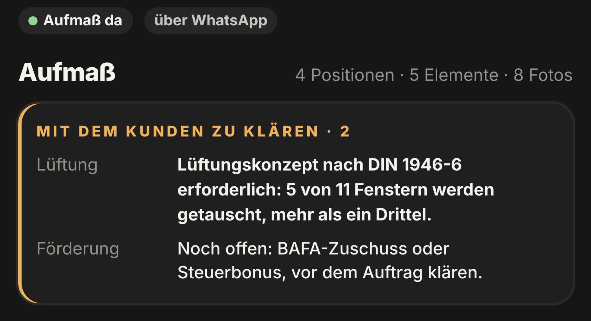

Im Projekt
Was zu
klären ist.
4 Positionen, 5 Elemente, 8 Fotos. Ganz oben steht, was Sie mit dem Kunden besprechen.
- Lüftungskonzept
- Förderung
- Absturzsicherung
- Offene Wünsche

Im Projekt
4 Positionen, 5 Elemente, 8 Fotos. Ganz oben steht, was Sie mit dem Kunden besprechen.
